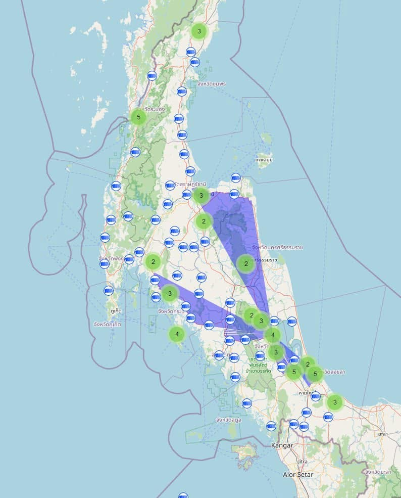
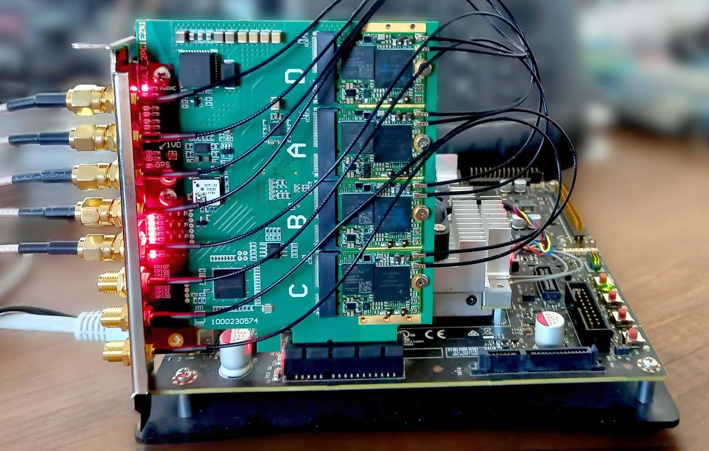
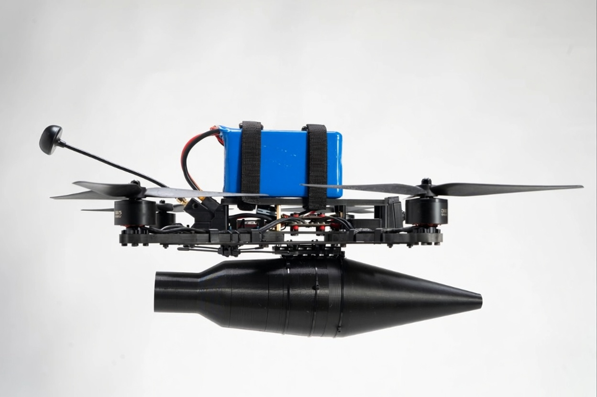
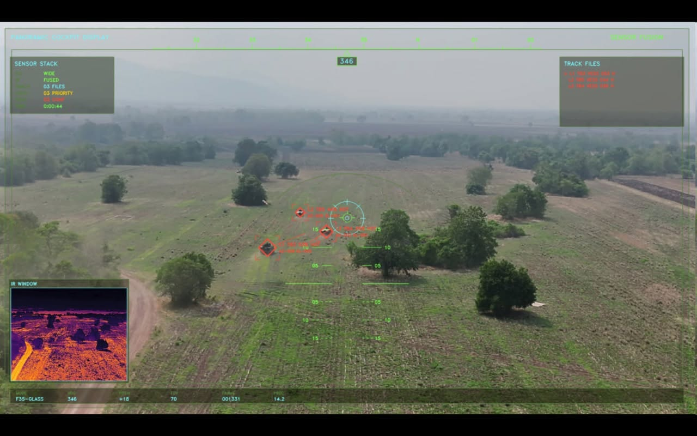

Portfolio
Kittiwut Khongkaeo
Selected builds and field deployments
Real installs and prototypes across IoT, private LTE/5G, wireless, climate sensing, and defense gear.

The People's Network Project
Build and run a free, decentralized LoRaWAN backbone across Southern Thailand and Northern Malaysia. Gateways, RF planning, and network server setup so sensors can talk without depending on public cellular.
- ScopeNetwork layout, multi-site gateway install, RF planning, operator handoff
- ImpactLive coverage for farms, environment sensors, and city IoT nodes
- StackLoRaWAN, mesh, edge gateways, open network servers, remote management

LTE / 5G Private Network Base Stations
Assemble, configure, and commission private LTE/5G base stations for plant, campus, and secure sites. Own RF front-end, spectrum plan, RAN/core setup, and on-site bring-up so the cell stands alone from public MNO gear. Work is limited to authorized bands, lab/demo, or licensed private networks under applicable regulation.
- ScopeBase station bring-up, RF front-end, spectrum plan, core/RAN config, site install
- ImpactOn-site private cellular for campuses, plants, and secure ops nets
- StackLTE / 5G NR, SDR RAN, multi-band RF, GPS timing, private core, orchestration

Electronic Warfare Systems
Design and integrate EW gear for secure links, signal intelligence, and spectrum work in contested RF. Includes jammer avoidance and anti-spoof measures so links and navigation stay usable under attack.
- ScopeEW design, RF countermeasures, jammer evasion, anti-spoof, tactical fit-out
- ImpactResilient comms and PNT under jamming and spoofing; clearer spectrum picture
- StackRF engineering, SDR, adaptive waveforms, spoof detection, secure signal processing

Tactical UAV Systems
Build tactical drones end-to-end: frame fit, flight firmware, radio/video links, and mission payloads ready for field sorties. EW-minded RF design so control and video links hold up under jamming.
- ScopeAirframe integration, flight firmware, payload mount, jammer-resistant datalinks
- ImpactWorking UAS for recon, delivery, and mission support in contested RF
- StackEmbedded C/C++, flight controllers, EW-hardened RF/video links, sensor fusion, automation

Homing Module
Build and integrate a UAV homing module: lock stationary or moving aims, hold track through day/night/thermal video, and fly the final approach with less operator load. Designed to keep target lock and guidance useful when the RF link is jammed or EW is heavy.
- ScopeAutonomous final approach, target track (static/moving), sensor fusion HUD, EW-tolerant guidance
- ImpactTighter hit geometry, lower pilot workload, mission continue under EW pressure
- StackOnboard AI/vision, day + IR fusion, flight-stack hooks, analog/digital video, edge compute

TAK / ATAK Systems
Build TAK/ATAK plugins and mission tools: maps, tracking, and encrypted mobile links for field teams. Integrate MANET and LoRaWAN for tactical mesh and long-range sensor/data backhaul where fixed network is thin.
- ScopeMission planning, map tracking, MANET/LoRaWAN tactical data paths, encrypted radio integration
- ImpactFaster coordination and clearer shared picture on the ground without relying on public cellular
- StackATAK plugins, Android mapping, MANET, LoRaWAN, secure data links, geospatial telemetry

Carbon Monitoring & Climate Technology
Build trustworthy, sensor-driven carbon MRV to help climate projects measure, verify, and report carbon outcomes with confidence. Combine field sensing with secure data handling so results are reliable, auditable, and decision-ready — pipeline: capture → validate → assure.
- ScopeContext & baseline, distributed field capture, consistency checks, secure records, reporting & claims
- ImpactHigher data confidence for buyers and auditors; faster MRV cycles; tamper-evident evidence for carbon claims
- StackField sensors, evidence-first MRV workflows, data integrity / audit trails, secure handling
How I work
Every build is aimed at real operations, not just the lab. Bench tests are only a step; the real measure is whether the system runs on site, under load, and in the hands of the crew who have to use it every day.
- DesignBuilt for field conditions, not demo-only setups
- ProveValidate on site under real RF, power, and ops constraints
- Hand offInstall, commission, and leave it maintainable for the team